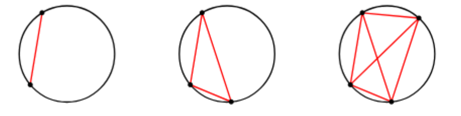
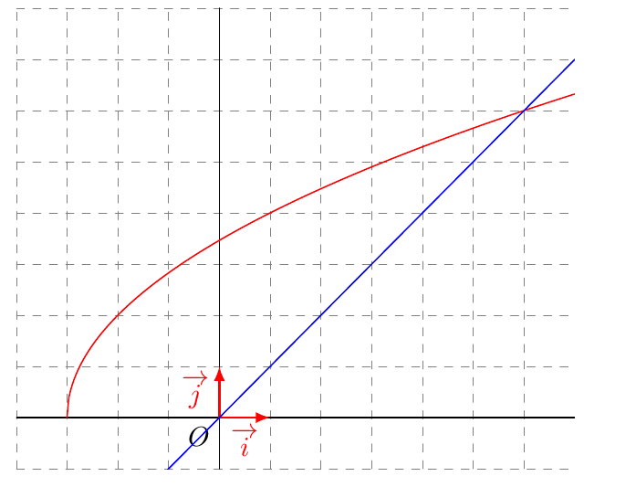
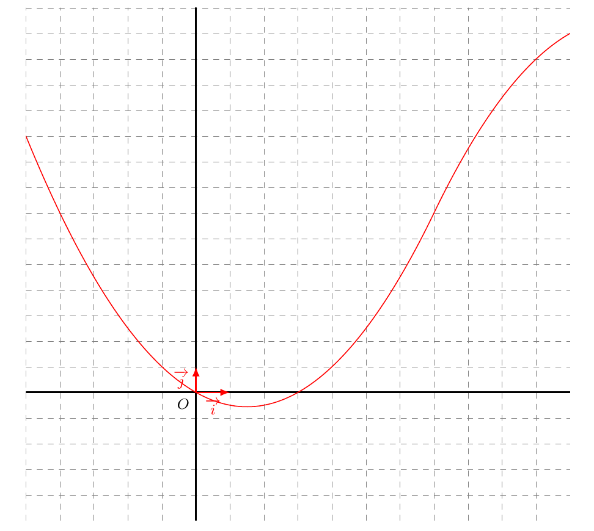
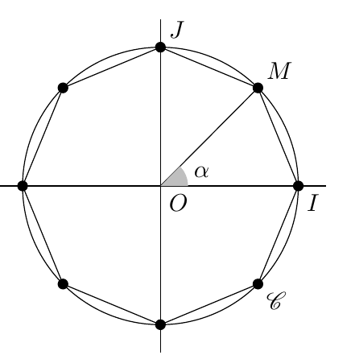
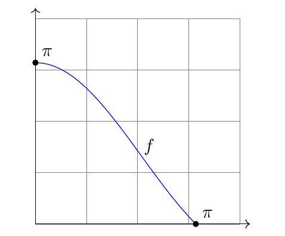
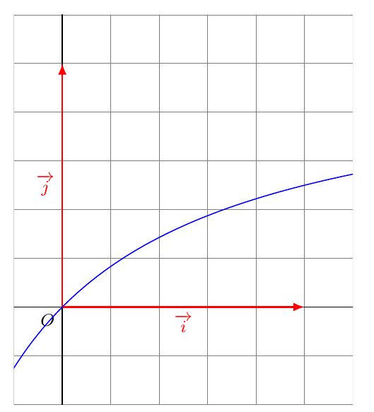

Feuilles d’exercices — Suites Numériques
Calcul de termes
Exercice 1
Exercice 1 :
- Soit \((u_n)\) une suite définie pour tout entier \(n \in \N\), par \(u_n=n^2-3\). Calculer \(u_{11}\).
- Soit \((v_n)\) une suite définie pour tout entier \(n \in \N\), par \(v_n=\frac{n^2-3n}{n-5}\). Calculer le premier terme de la suite.
- Soit \((w_n)\) une suite définie pour tout entier \(n \in \N\), par \[w_n=\sum_{k=0}^n 2^k=1+2+2^2+\dots +2^n\] Calculer \(u_4\).
Exercice 2
Exercice 2 :
On considère le programme python suivant :
def f(x):
return x**2-3
def terme_suite(k):
L=[]
for i in range(k):
u=f(i)
L.append(u)
return u- Que renvoie l’appel
terme_suite(10)? À quelle suite de l’exercice cela correspond ? - Modifier le script précédent afin de calculer les 10 premiers termes de la suite \((v_n)\) précédente.
- Modifier le script précédent afin de calculer les 10 premiers termes de la suite \((w_n)\) précédente.
Exercice 3
Exercice 3 :
Pour chacune des suites suivantes définies pour tout entier naturel \(n\), calculer les cinq premiers termes.
- \(u_n = 7n + 1\)
- \(v_n = n^2 - 3n + 1\)
- \(w_n = \dfrac{1}{2n - 1}\)
- \(t_n = \sqrt{5n + 1}\)
Exercice 4
Exercice 4 :
Pour chacune des suites suivantes définies par récurrence pour tout entier naturel \(n\), calculer les quatre termes suivant le premier.
- \(\left\{\begin{array}{l} u_0 = 2 \\ u_{n+1} = 2u_n + 1 \end{array}\right.\)
- \(\left\{\begin{array}{l} u_0 = 1 \\ u_{n+1} = u_n^2 + 1 \end{array}\right.\)
- \(\left\{\begin{array}{l} u_1 = 1 \\ u_{n+1} = \dfrac{1}{u_n + 2} \end{array}\right.\)
- \(\left\{\begin{array}{l} u_0 = 1 \\ u_{n+1} = \sqrt{u_n^2 + 1} \end{array}\right.\)
Exercice 5
Exercice 5 :
- Pour chacune des suites suivantes, calculer les trois termes suivant le premier :
- \(\left\{\begin{array}{l} u_0 = 2 \\ u_{n+1} = 3u_n - 4n \end{array}\right.\)
- \(\left\{\begin{array}{l} u_0 = 0 \\ u_{n+1} = u_n^2 + \dfrac{1}{2n+1} \end{array}\right.\)
- \(\left\{\begin{array}{l} u_0 = 3 \\ u_{n+1} = 5u_{n-1} - 2 \end{array}\right.\)
- \(\left\{\begin{array}{l} u_0 = 1 \\ u_1 = 2 \\ u_{n+2} = 2u_{n+1} + u_n \end{array}\right.\)
- \(\left\{\begin{array}{l} u_0 = 1 \\ u_1 = 2 \\ u_{n+2} = (n+1)u_{n+1} + n \end{array}\right.\)
- Utiliser la calculatrice afin d’afficher de la quatrième à la dixième valeur des deux suites précédentes.
Exprimer en fonction de … et script python
Exercice 6
Exercice 6 :
- Soit \((u_n)\) une suite définie pour tout entier \(n \in \N\), par \(u_0= 3\) et \(u_{n+1}=u_n^2-3\). Calculer les trois premiers termes.
- Soit \((v_n)\) une suite définie pour tout entier \(n \in \N\), par \(v_0=3\) et \(v_{n+1}=\frac{v_n}{2n+1}\). Calculer les trois premiers termes.
- Soit \((u_n)\) une suite définie pour tout entier \(n \in \N\), par \(u_0= 3\) et \(u_{n+1}=u_n^2-3\). Calculer les trois premiers termes.
- Modifier le script de l’exercice précédent afin que le programme renvoie la liste des \(n\) premiers termes de la suite \((u_n)\).
Exercice 7
Exercice 7 :
Pour chacune des suites suivantes définies sur \(\mathbb{N}\), exprimer \(u_{n-1}\) et \(u_{n+1}\) en fonction de \(n\) :
- \(u_n = 6n + 8\)
- \(u_n = n^2 - 2n + 8\)
- \(u_n = \dfrac{n(n+1)}{n+2}\)
- \(u_n = \dfrac{3^{n+1}}{2^n}\)
- \(u_n = \dfrac{9n - 5}{4n + 6}\)
- \(u_n = \left( \dfrac{n^2}{n+1} \right)^{n+1}\)
Exercice 8
Exercice 8 :
Soit \(u_n=2n^2-6n+4\).
Exprimer \(u_{n+1}\), \(u_{n+2}\), \(u_{2n+1}\), et \(u_{n^2}\) en fonction de \(n\).Soit \(u_{n+2} = 3 u_{n+1} -2n\)
Exprimer \(u_{n+1}\) en fonction de \(u_n\) et \(n\), puis \(u_{n+2}\) en fonction de \(u_n\) et \(n\).
Exercice 9
Exercice 9 :
Soit \((u_n)\) une suite définie pour tout entier \(n\) par \(u_n=1+(-1)^n \frac{5}{2^{n-1}}\).
Montrer que la suite \(v_n = \frac{u_{n+1}-1}{u_{n}-1}\) est constante.
Exercice 10
Exercice 10 :
Soit la suite \((un_)\) définie sur \(\N\) par \(u_0=1\) et \(u_{n+1} = \frac{u_n}{1+u_n(1+2n)}\)
- Calculer les 5 premiers de la suite \((u_n)\).
- Conjecturer une forme explicite de la suite \((u_n)\).
- Démontrer votre conjecture.
Exercice 11
Exercice 11 :
- On considère la suite définie par \(u_n=\frac{2n-5}{n^2-4}\)
- À partir de quel rang la suite est-elle parfaitement définie ? Justifier brièvement.
- Exprimer, en fonction de \(n\), \(u_{n+1}\) et \(u_{2n}\).
- Exprimer \(u_n - 1\) en fonction de \(n\), et en déduire que tout \(u_n <1\).
- À partir de quel rang la suite est-elle parfaitement définie ? Justifier brièvement.
- On considère la suite définie par la fonction python ci-dessous :
def suite(n):
u = 1
for i in range(n):
u = i / (2*u + 1)
return u- Donner le terme initial de la suite ainsi que la relation de récurrence.
- Quel terme de la suite est renvoyé par l’instruction ?
- Compléter le script précédent pour qu’il calcule la somme des \(n\) premiers termes.
Exercice 12
Exercice 12 :
Soit \(n \leqslant 1\). On considère la suite \((u_n)\) définie par \[u_n=\sum_{k=1}^n k^2\]
- Calculer les 3 premiers termes de la suite \((u_n)\).
- Calculer les 3 premiers termes de la suite \((u_n)\).
- Établir une relation de récurrence entre \(u_{n+1}\) et \(u_n\).
On considère la suite \((v_n)\) définie pour tout \(n \leqslant 1\) par \[v_n=\frac{n(n+1)(2n+1)}{6}\]
- Montrer que \(u_1=v_1\).
- Montrer que \(v_n\) vérifie la relation de récurrence de la question 1.b
- Conclure.
- Montrer que \(u_1=v_1\).
Exercice 13
Exercice 13 :
Écrire un script python qui permet de retourner la liste des \(k\) premiers de la suite \((u_n)\).
- \(u_n=\frac{2n}{n^2+1}\)
- \(u_0=3\) et \(u_{n+1}=\frac{u_n-1}{u_n+1}\)
- \[ \left\{ \begin{array}{l} w_0=4\\ w_{n+1}=5w_n-2n \end{array} \right. \]
Exercice 14
Exercice 14 :
Sur un cercle, on place \(n\) points distincts et on s’intéresse au nombre \(p_n\) de cordes que l’on peut tracer.

- Déterminer \(p_3\), \(p_4\) et \(p_5\).
- \(n\) points sont placés et les \(p_n\) cordes sont tracées. On ajoute un nouveau point distinct des précédents.
Combien de nouvelles cordes peut-on tracer ?
En déduire une relation de récurrence entre \(p_{n+1}\) et \(p_n\). - En écrivant les lignes comme ci-dessous et en additionnant terme à terme par colonne
\[ \begin{array}{l} p_2=1\\ p_3=p_2+ \dots \\ p_4=p_3+ \dots \\ \dots \\ p_n=p_{n-1}+\dots\\ \end{array} \]
Déterminer \(p_n\) en fonction de \(n\).
- On voudrait connaître le nombre de points nécessaires pour tracer \(1\,035\) cordes.
Proposer un algorithme utilisant la formule de récurrence de la suite \((p_n)\).
Variations des suites numériques
Exercice 15
Exercice 15 :
Soit \((u_n)_{n \geq 0}\) définie par \(u_n= \frac{2n - 1}{n + 1}\)
- Calculer les 3 premiers termes de la suite.
- Étudier les variations de la suite.
- Montrer que pour tout entier \(n > 0\), \(u_n \in [0 \,;\,2]\)
Exercice 16
Exercice 16 :
Démontrer que si deux suites sont croissantes, alors la somme des deux est croissante.
Exercice 17
Exercice 17 : Étude par la différence
Dans chacun des cas suivants, étudier les variations de la suite \((u_n)\) puis calculer les 3 premiers termes.
- \(u_n=n - 2^n\)
- \(\left\{\begin{array}{l}u_0 = 0\\ u_{n+1} = u_n + 2n \end{array} \right.\)
- \(\left\{\begin{array}{l} u_0=1\\ u_{n+1} = (u_n + 0,5)^2 \end{array} \right.\)
Exercice 18
Exercice 18 : Étude par le quotient
En étudiant le signe de \(u_n\) et le quotient \(\frac{u_{n+1}}{u_n}\) (on admettra que pour tout \(n\), \(u_n\neq 0\))
- \(u_n = \frac{10}{7^n}\)
- \(v_n = \frac{2^{n+1}}{3^{1-n}}\)
- \(w_n = n \times 3^{-n}\)
- \(\left\{\begin{array}{l}t_0 = -1\\ t_{n+1} = t_n^3 +2t_n \end{array} \right.\)
Exercice 19
Exercice 19 : Étude par la fonction associée
En étudiant les variations de la fonction \(f\) associée que l’on précisera, étudier les variations des suites suivantes :
- \(u_n = -n^3 + 3n\)
- \(w_n = n^2 -2n +1\)
- \(s_n=\sqrt{2n-4}\)
- \(t_n=\frac{4-n}{n+1}\)
Peut-on appliquer cette méthode à la suite \((r_n)\) définie par \(r_0=4\) et pour tout \(n \in \N\), \[r_{n+1}=r_n^2-2n+3\]
Exercice 20
Exercice 20 :
On considère les propositions suivantes :
- \((P_1)\) : Si la suite \((u_n)\) est strictement croissante sur \(\N\) alors \(u_3 < u_4\).
- \((P_2)\) : Si la suite \((u_n)\) est strictement décroissante sur \(\N\) alors \(u_3 < u_4\).
- \((P_3)\) : Si la suite \((u_n)\) est strictement décroissante sur \(\N\) alors \(\forall n \in \, \, u_{n+1} \leqslant u_n\)
- \((P_4)\) : Si la suite \((u_n)\) est strictement sur \(\N\) alors \(\forall n \in \, \, u_{n+1} > u_n\)
- En justifiant, indiquer pour chacune des propositions précédentes, si elle est vraie ou fausse.
- Indiquer la réciproque de chacune de ces propositions et dire si elle est vraie ou fausse.
Exercice 21
Exercice 21 : Méthode au choix
Étudier les variations des suites suivantes en utilisant la méthode de votre choix.
- \(u_n = n + \frac{1}{n+1}\)
- \(v_n = \frac{n+1}{2^n}\)
- \(\left\{\begin{array}{l}w_0=1\\ w_n = w_{n+1} + \frac{1}{n} \end{array} \right.\)
Exercice 22
Exercice 22 : Vrai/faux
- Si une suite \(u\) est décroissante alors \(u_1\geqslant u_5\).
- Si une suite \(v\) est décroissante alors pour tout \(n \in \N\), \(v_n \leqslant v_0\).
- Soit une suite \(w\) définie pour tout \(n \in \N\) par \(w_n=f(n)\) où \(f\) est définie sur \([0\,;\, +\infty[\). Si \(w\) est croissante alors la fonction \(f\) est croissante.
- Soit \(v\) la suite définie sur \(\N\) par
\[\left\{\begin{array}{l}v_0=2\\ v_{n+1}=g(v_n) \end{array}\right.\]
où \(g:x \longmapsto x-4\). La suite \((v_n)\) est croissante.
Exercice 23
Exercice 23 :
Soit \((u_n)\) une suite à termes strictement positifs.
- Démontrer que si \((u_n)\) est strictement croissante alors \(\left(\frac{1}{u_n} \right)\) est strictement décroissante.
- Que peut-on dire de la réciproque ?
Exercice 24
Exercice 24 :
(Extrait Devoir)
On considère les suites \((u_n)\), \((v_n)\) définies pour tout \(n \in \N\) par
\[u_n = 2n^2+4n-2 \quad ; \quad v_n = -\frac{3^n}{2} \quad ; \quad w_n= n- \frac{1}n\]- Calculer le 3 terme de la suite \((u_n)\).
- Étudier les variations des suites \((u_n)\), \((v_n)\) et \((w_n)\) par étude de la différence.
On considère la suite \((t_n)\) définie par
\[t_n=\frac{-2^n}{n-4}\]- À partir de quel rang la suite est-elle définie ?
- En utilisant la méthode du quotient, déterminer les variations de la suite \((t_n)\).
Exercice 25
Exercice 25 :
On considère la suite \((u_n)\) définie pour tout \(n \geqslant 1\) par
\[u_n=\sum_{k=1}^n \frac{(-1)^k}{k}\]
Étudier les variations de la suite \((v_n)\) où pour tout \(n \in \N^*\), \(v_n=u_{2n}\)
Problèmes et suites récurrentes
Exercice 26
Exercice 26 :
On considère la suite \((u_n)\) définie par \[u_0=0,9 \et u_{n+1} =u_n^2\] On considère la fonction \(f\) tel que \(u_{n+1} =f(u_n)\) définie sur \([0;1]\).
Construire les premiers de cette suite.
- Étudier les variations de la fonction \(g\) définie par \(g(x) =x -x^2\).
- Justifier que si \(x \in [0;0,5]\) alors \(f(x) \in [0;0,5]\)
- Démontrer que \(u_1 \in [0;0,5]\) et en déduire que pour tout \(n \geqslant 1\), \(u_n \in [0;0,5]\)
- En déduire les variations de la suite \((u_n)\).
- Étudier les variations de la fonction \(g\) définie par \(g(x) =x -x^2\).
Exercice 27
Exercice 27 :
On considère la suite \((u_n)\) définie sur \(\N\) par \[u_n=\frac{-3^n}{(n^2+2)2^n}\]
- Justifier que pour tout \(n >0\), \(u_n <0\)
- Montrer que pour tout \(n \in \N\), \[\frac{u_{n+1}}{u_n}>1 \Longleftrightarrow n(n-4) >0\]
- Résoudre \(n(n-4) >0\)
- En déduire la monotonie de la suite \((u_n)\).
Exercice 28
Exercice 28 :
On considère la suite \((u_n)\) définie par \(u_0=2\) et pour tout \(n \in \N\),
\[u_{n+1}=1- \frac{1}{u_n}\]
Montrer que la suite \((u_{3n})\) est constante.
Exercice 29
Exercice 29 :
- Étudier le signe \(x^2-4x-12\)
- On considère la fonction \(f\) définie sur \([-3_,;\, + \infty[\) par \[f(x)= \sqrt{4x+12}\]
Soit la suite \((u_n)\) définie par \(u_0 =-1\) et pour tout \(n \in \N\), \[u_{n+1}= f(u_n)\]

- Construire, sur le graphique fourni, les cinq premiers termes de la suite \((u_n)\)
- Conjecturer le sens de variation de la suite \((u_n)\)
- On admet que pour tout entier \(n\),
\[-1 \leqslant u_n \leqslant 6\]
En utilisant la question 1., démontrer que la suite \((u_n)\) est croissante.
Exercice 30
Exercice 30 :
Soit \((v_n)\) la suite définie par \(v_0=6\) et pour tout \(n \in \N\),
\(v_{n+1}= f(v_n)\), où \(f\) est une fonction représentée graphiquement.
- Construire graphiquement les cinq premiers termes de la suite

- Conjecturer les variations de la suite \((v_n)\) ainsi que sa limite éventuelle
- Existe-t-il des valeurs de \(v_0\) pour lesquels la suite ne semble pas converger ? Préciser.
Exercice 31
Exercice 31 :
On considère la suite \((u_n)\) définie par \(u_0= \frac12\) et pour tout \(n \in \N\),
\[u_{n+1} = \frac{3u_n}{1+2u_n}\]
- Déterminer les trois premiers termes de la suite
- A l’aide de la calculatrice, conjecturer les variations de la suite
- A l’aide de la calculatrice, conjecturer les variations de la suite
- On admet que la suite \((u_n)\) est majorée par \(1\). Montrer que la suite \((u_n)\) est croissante
- On considère la suite \((v_n)\) définie sur \(\N\) par
\[v_{n+1} = \frac{u_n}{1-u_n}\]- Calculer \(v_0\) et \(v_1\)
- Démontrer que la suite \((w_n)\) définie par \(w_n= 3^n\) vérifie la relation de récurrence de la suite \((v_n)\)
- En déduire l’expression de la suite \((v_n)\) en fonction de \(n\)
- En déduire l’expression de la suite \((u_n)\) en fonction de \(n\)
- Déterminer les variations de la suite \((u_n)\)
- Calculer \(v_0\) et \(v_1\)
Limites et seuil
Exercice 32
Exercice 32 :
On considère la suite définie sur \(\N^*\) par \(u_n=2-\frac{1}{n^2}\)
- Montrer que la suite \((u_n)\) est croissante.
- Démontrer que pour tout \(n \geqslant 1\), \(u_n <2\)
- A l’aide d’un script python, déterminer le plus petit entier \(n_0\), tel que pour tout \(n >n_0\), \(u_n>1,999999\)
- Retrouver algébriquement le résultat de la question précédente.
Exercice 33
Exercice 33 :
À l’aide de la calculatrice, déterminer la limite des suites suivantes :
- \(u_n=\frac{5 \times (-1)^n}{n+1}\)
- \(v_n=\frac{1}{4} n^2-2n-1\)
- \(\left\{\begin{array}{l}w_0=5\\ w_{n+1}=0,8 \times 0,8 w_n\end{array} \right.\)
- \(\left\{\begin{array}{l}t_0=1\\ t_{n+1}=-\frac{2}{3} t_n +4\end{array} \right.\)
Exercice 34
Exercice 34 :
Déterminer les limites des suites suivantes :
- \(u_n=-5n+2\)
- \(v_n=4n^2+n+7\)
- \(w_n=\frac{2n+3}{n}\)
- \(wx_n=(-1)^n\)
Exercice 35
Exercice 35 :
On considère la suite \((u_n)\) définie par \(u_0=3\) et pour tout \(n \in \N\), \(u_{n+1} = \frac{1}{2} u_n +1\).
- On admet que pour tout \(n \in \N\), \(u_n \leqslant 2\)
- Déterminer, à l’aide de la calculatrice, la limite de la suite.
- Compléter le programme Python suivant :
def seuil_suite():
u = 3
n = 0
while ................. :
n = n + 1
u = ...................
return n- Étude algébrique :
- Montrer que pour tout \(n\), \(u_n= \left(\frac{1}{2}\right)^n + 2\)
- Démontrer que la suite \((u_n)\) est croissante et déterminer sa limite.
- Déterminer, à l’aide des variations de la suite, le plus petit entier \(n\) tel que \(2 \leqslant u_n < 2,00001\)
Exercice 36
Exercice 36 :
On considère la suite \((u_n)\) définie par \(u_n=n^2-n\).
Étudier les variations de la suite \((u_n)\).
Conjecturer la limite de la suite \((u_n)\).
> Défi : démontrer que quelque soit le réel \(A\), on peut toujours trouver un entier \(n_0\), tel que \(u_{n_0} > A\)Écrire une fonction
suite_uen Python qui retourne le plus petit entier \(n\) tel que \(u_n > 10^p\) où \(p\) est un paramètre de la fonction.
Exercice 37
Exercice 37 :
On considère la suite \((v_n)\) définie sur \(\N\) par \(v_n=\frac{10n+1}{5n+6}\).
- Conjecturer le comportement de la suite au voisinage de \(+\infty\).
- Démontrer que pour tout \(n\), \(v_n-2= \frac{-11}{5n+6}\)
- Valider par un argument votre conjecture.
- Démontrer que pour tout \(n\), \(v_n-2= \frac{-11}{5n+6}\)
- Écrire une fonction
seuil_suitequi retourne le rang \(p\) à partir duquel \(\left|u_n-2\right| < 10^{-7}\). - (Bonus) En utilisant la question 2.a, déterminer les variations de la suite \((u_n)\).
Approfondissement
Exercice 38
Exercice 38 :
On pose pour tout entier \(n \neq 0\), \[S_n= \sum_{k=0}^n \frac{1}{k(k+1)}\]
- Démontrer que la suite \((S_n)\) est croissante.
- Démontrer que pour tout entier \(k \neq 0\),
\[ \frac{1}{k(k+1)} = \frac{1}{k} - \frac{1}{k+1} \] - En déduire une expression simple de la \(S_n\).
- Déterminer la limite de \((S_n)\).
Exercice 39
Exercice 39 :
Soit un polygone à \(n\) côtés inscrit dans le cercle trigonométrique comme dans la figure ci-dessous (\(n=8\), il s’agit d’un octogone).
On note \(\mathcal{A}_n\) l’aire de ce polygone.

- Dans le cas de l’octogone, quelle est la mesure de l’angle \(\alpha=\widehat{IOM}\) ?
- Dans le cas général d’un polygone régulier à \(n\geq3\) côtés on pose \(\alpha_n=\dfrac{2\pi}{n}\). Vérifier que pour \(n=8\) on retrouve bien le résultat de la question précédente. Expliquer pourquoi.
- Quelles sont les figures obtenues lorsque \(n=3\) et \(n=4\) ?
- Montrer que la suite \((\alpha_n)\) est bornée et décroissante. Déterminer sa limite.
- Montrer que \(\mathcal{A}_n=\pi\dfrac{\sin(\alpha_n)}{\alpha_n}\).
- On pose sur \([0\,;\, \pi]\) la fonction \(f\) définie par \(f(x)=\pi\dfrac{\sin(x)}{x}\). Quel est le lien entre \(\mathcal{A}_n\) et \(f\) ?

- À l’aide de la courbe de \(f\) ci-dessus, dresser le tableau de variation de \(f\) sur \([0\,;\, \pi]\).
- Donner un encadrement de \(f\) sur \([0\,;\, \pi]\).
- (*) En déduire que \((\mathcal{A}_n)\) est bornée.
- (**) Montrer que \((\mathcal{A}_n)\) est croissante.
Indication : on pourra utiliser la définition d’une suite décroissante avec \((\alpha_n)\) puis la définition d’une fonction décroissante avec \(f\).
- (**) Quelle est la limite de \((\mathcal{A}_n)\) ?
En déduire une conjecture géométrique sur l’aire du polygone inscrit.
Exercice 40
Exercice 40 :
- Soit \(x\) et \(y\) deux réels positifs ou nuls.
- Développer \((\sqrt{x} - \sqrt{y})^2\).
- En déduire que \(\sqrt{xy} \leq \frac{x + y}{2}\).
- Développer \((\sqrt{x} - \sqrt{y})^2\).
- On considère les deux suites \((u_n)\) et \((v_n)\) définies par \(u_0 = 1\), \(v_0 = 4\) et, pour tout entier naturel \(n\),
\[ u_{n+1} = \frac{u_n + v_n}{2} \quad \text{et} \quad v_{n+1} = \sqrt{u_n v_n} \]- Calculer les valeurs exactes de \(u_1\), \(u_2\), \(v_1\) et \(v_2\).
- Démontrer que, pour tout entier \(n \geq 1\), \(v_n \leq u_n\).
Indication. Pour \(n \geq 1\), on peut écrire \(u_n\) et \(v_n\) en fonction de \(u_{n-1}\) et de \(v_{n-1}\).
- Montrer que \((u_n)\) et \((v_n)\) sont monotones à partir du rang 1.
- Compléter les variations.
- Calculer les valeurs exactes de \(u_1\), \(u_2\), \(v_1\) et \(v_2\).
Exercice 41
Exercice 41 :
On considère la suite \((u_n)\) définie sur \(\N^*\) par \[ u_n= \sqrt{n+1} -\sqrt{n} \]
- Déterminer les variations de la suite \((u_n)\).
- Démontrer que pour tout \(n \in \N^*\),
\[ \frac{1}{2\sqrt{n+1}} \leqslant u_n \leqslant \frac{1}{2\sqrt{n}} \] - En déduire (ou conjecturer) la limite de la suite \((u_n)\).
- Démontrer que pour tout \(n \in \N^*\),
- On définit la suite \((v_n)\) par \[
v_n =\frac{u_1+u_2+ \dots + u_3}{\sqrt{n}}
\]
Quelle est la limite de la suite \((v_n)\) ?
Bilan (Les scripts à savoir faire)
Exercice 42
Exercice 42 :
On considère la suite \((u_n)\) définie, pour tout entier naturel \(n\), par \(u_n=n^3-n+4\).
- Déterminer les trois premiers termes de la suite.
- Exprimer \(u_{n+1}\) en fonction de \(n\).
- Exprimer \(u_{n+1}-u_n\) en fonction et \(n\) et en déduire les variations de la suite \((u_n)\).
- L’algorithme ci-dessous contient une fonction
suitequi doit permettre de déterminer un rang \(n\) à partir duquel tous les termes de la suite sont supérieurs à un nombre réel \(A\).
def u(n):
return n**3-n+4
def seuil(A):
n = 0
while u <= A:
u = 3 * u + 4
n = n + 1
return n, u- Que est le rôle de la fonction ?
- Programmer cet algorithme et exécuter la fonction en prenant \(A = 100\), puis \(A=100\,000\) et enfin \(A=10^{20}\).
- Conjecturer la limite éventuelle de la suite \((u_n)\).
Exercice 43
Exercice 43 :
Soit \((u_n)\) la suite définie par : \[\left\{ \begin{array}{l} u_0 = 10 \\ u_{n+1} = 2u_n - 5 + n \end{array} \right. \]
Écrire une fonction python
u(n)de paramètrenun entier et qui renvoie le terme \(u_n\) de cette suite (avec une bouclewhileet une bouclefor).Écrire une fonction python
termes_u(n)de paramètrenun entier et qui renvoie les termes \(u_0\) à \(u_n\) de cette suite dans une liste (avec une bouclewhileet une bouclefor).On admet que la suite \(u\) est croissante.
Écrire une fonctionseuil(M)de paramètreMet qui renvoie le rang du premier terme de la suite tel que \(u_n \geq M\).Écrire un script qui permet de savoir si une suite est croissante sur les \(n\) premiers termes.
Exercice 44
Exercice 44 :
On considère la suite \((u_n)\) définie, pour tout \(n \in \mathbb{N}\), par : \[ u_0 = 1 \\ u_{n+1} = \frac{u_n}{1+u_n} \]
- On considère la fonction \(g\) définie sur \([0\,;\,+ \infty[\) telle que \(u_{n+1}= g(u_n)\).
- Déterminer l’expression de la fonction \(g\).
- Construire les 5 premiers termes de la suite \((u_n)\).
- Conjecturer les variations et la limite de la suite \((u_n)\).
- Déterminer l’expression de la fonction \(g\).

- Calculer les cinq premiers termes de la suite.
- Conjecturer la forme générale de \(u_n\).
- Comment peut-on vérifier la cohérence la cohérence de la conjecture à l’aide de la calculatrice ?
- Vérifier la conjecture algébriquement.
- Soit \(f\) la fonction définie sur \([0\,;\,+ \infty[\) telle que pour tout \(n \in \N\), \(u_{n}=f(n)\)
- Donner l’expression de la fonction \(f\).
- Étudier les variations de la fonction \(f\) et en déduire celle de la suite \((u_n)\)
- Déterminer la limite éventuelle de la suite \((u_n)\).
- Donner l’expression de la fonction \(f\).